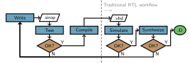

Sirop documentation#
Sirop is a language and compiler for generating streaming accelerators. Similarly to projects like HLS4ML and Altera HLS IP Gen, the goal is to convert high-level code into VHDL that can be synthesized and run on an FPGA.



Programs are written in a functional style using “parallel patterns.” For example, a dot product can be expressed as follows:
$ sirop
Welcome to the Sirop REPL (v2.1.0)!
Type 'exit' or press Ctrl+D to exit.
> u = [1:u8, 2:u8, 3:u8, 4:u8]s
> v = [5:u8, 6:u8, 7:u8, 8:u8]s
> zipped = StmZip(u, v)
> zipped
[(1:u8, 5:u8), (2:u8, 6:u8), (3:u8, 7:u8), (4:u8, 8:u8)]s
> multiplied = zipped.StmMap( @(x, y) => x * y )
> multiplied
[5:u8, 12:u8, 21:u8, 32:u8]s
> result = multiplied.StmSum()
> result
[70:u8]s
Getting Started
Reference